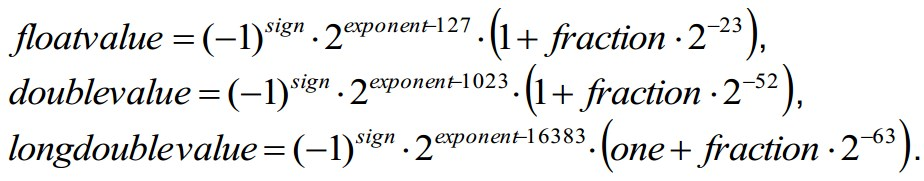

optimizing cpp 笔记
作者：Agner Fog，原书见这里
- CPU密集型工作，64位系统比32位系统可提升5-10%的性能
- 64位系统使得地址无关代码更有效
- Gnu编译器通常使用内置代码代替，性能不好，可使用选项
-fno-builtin - 一般dll占用更多的内存
- 优化之前，先找到瓶颈
- 一般，level-1 cache 8~64KB；level-2 256KB
- float 加法可能需要3~5个clock
- double precision和单精度浮点数加法耗时一样
- 模板比多态系能更高
- 如果没有大的数组，可以肯定所有的变量都会在level-1 cache中，存取速度非常快
- 静态变量分为3种：1）常量，2）初始化变量；3）未初始化变量。有时可以将静态变量copy到stack中，放到level-1 cache中，加快存取
- 64位系统一般有14个整数寄存器，16个浮点数寄存器
- volatile 标记一个变量可能被另一个线程更改，但不意味着是原子变量
- thread local变量性能不好，应该尽量不使用
- class里的变量根据声明顺序存储
- 用常量做除法，性能更好
- 不要signed和unsigned混用；signed整数转换成float比unsigned整数快，signed转换成整数需要4-16个clock
x = array[i++]比x = array[++i]更高效，后者读取x必须在i计算完后，而前者可以并行- 使用智能指针为了避免内存泄露
- 浮点数转为整数需要50~100个clock
- 和0比较比和其他整数比较更高效
- 返回复杂类型时，是通过一个隐藏的指针返回的
- 如果一个类有至少一个虚函数，会有指向虚表的指针
- 线程安全的函数不能使用static变量
- 异常处理本意使用来优雅处理很少出现的错误，如果使用了RAII程序是异常安全的，析构函数抛出异常可能引起系统崩溃
- 如果函数调用了
exit()，abort()，_endthread()等，不保证所有对象的析构函数会被调用 - 不使用异常处理的代码更高效
- 建议关闭RTTI机制
- 除非程序使用了异常处理，否则不要使用stack frame
- 链接的顺序通常和makefile里出现的顺序一致
- 把变量存在static内存，可能会引起cache失效问题，当数组为2的指数倍大小时，注意cache失效的问题
- 中断异步处理中，不要直接去处理业务逻辑，而是标记收到事件了，在更低优先级的事件循环函数中具体处理
- Why is template metaprogramming so complicated? Because the C++ template feature was never designed for this purpose. It just happened to be possible.
const int min = 100, max = 110; int i;
if (i >= min && i <= max) {...}
if ((unsigned int)(i - min) <= (unsigned int)(max - min)) {...} // 更高效
struct Sfloat {
unsigned int fraction:23; // fractional part
unsigned int exponent:8; // exponent + 0x7F
unsigned int sign:1; // sign bit
};
struct Sdouble {
unsigned int fraction:52; // fractional part
unsigned int exponent:11; // exponent + 0x3FF
unsigned int sign:1; // sign bit
};
struct Slongdouble {
unsigned int fraction:63; // fractional part
unsigned int one:1; // always 1 if nonzero and normal
unsigned int exponent:15; // exponent + 0x3FFF
unsigned int sign:1; // sign bit
};
